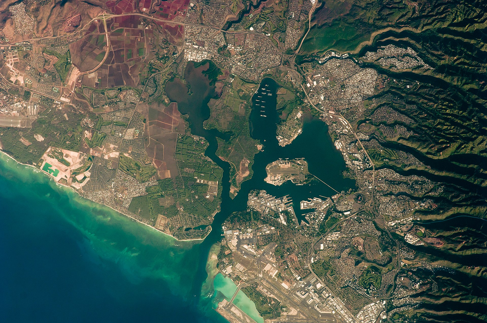

Pearl Harbor
| Home - Home |
Attack On Pearl Harbor - Attack On Pearl Harbor |
The Arizona - The Arizona |
Pearl Harbor After Math - Pearl Harbor After Math |
Pearl Harbor was an important naval base for the US pacific fleet holding most of the pacific fleet.
At the time having a strong navy was vital to maintaining your countries status in the world.
Having a fleet meant projecting your power across the waves and keeping other countries in check.

Pearl Harbor located Ohau, Hawaii
Seeing this it is obvious why the Japanese would choose to attack such a target as a well cordinated strike could cripple the Pacific fleet allow the Japanese to commence operations as they wish.
See here - Attack On Pearl Harbor to learn more about the attack.
Pearl Harbor | Home - Home |
Intro - Intro |
Attack On Pearl Harbor - Attack On Pearl Harbor | The Arizona - The Arizona |
Pearl Harbor After Math - Pearl Harbor After Math |
All images and info gathered from Wikipedia.